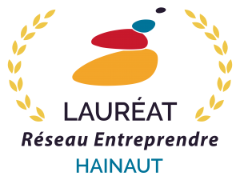

La société GEO2R est un bureau d’études en imagerie technique par drone, créée en 2014 et soutenue par le réseau ENTREPRENDRE.
{kind=link}
Elle a été fondée par Julien et Willy, amis de longue date, tous deux passionnés par l’imagerie aérienne.
Le drone est pour nous un outil révolutionnaire et innovant permettant de recueillir différents types de données d’une précision extrême, dans des milieux difficilement accessibles par l’homme, et tout cela en respectant l’environnement.
La société est implantée sur la ville de Denain (59, France) et réalise vos prises de vue aériennes, en France et dans le monde.
En proposant à nos clients des prestations d’intégration 3D, de cartographie, de modélisation 3D et d’inspection, l’ambition de GEO2R est de livrer une expertise technique et précise sur les projets dont nous avons la charge.
Nos valeurs font la force de notre entreprise : Excellence, Précision, Fiabilité et Sécurité.
Grâce à l’internalisation de l’ensemble des solutions proposées, nous répondons de manière réactive, souple et personnalisée à chacun de vos projets !
{kind=link}